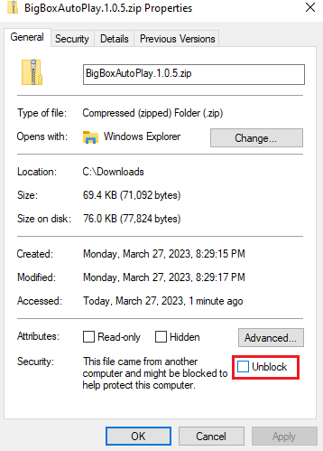

Install
Overview
To install Big Box Auto Play, download the latest version from the LaunchBox forums or the Github releases page, unblock the zip file if necessary, and copy the plug-in DLLs to the LaunchBox Plugins folder.
Download
Big Box Auto Play can be downloaded from the LaunchBox forums or the Github releases page. The download is a zip file which contains the DLLs that provide the plug-in functionality.
Unblock
Windows may block the downloaded zip fie which renders the plug-in non-functional. To check whether the zip file was blocked, right click the downloaded zip file and select properties. The properties window will open. If the file is blocked, there will be a message at the bottom of the properties window stating that the file may be blocked to protect your computer. If the file is blocked, unblock it by checking the box and click ok to close the properties window. and unblock it if necessary.
{kind=link}
Extract
Extract the contents of the zip file to a folder. The extracted zip file contains two DLLs:
BigBoxAutoPlay.dll
Prism.dll
Install
To install the plug-in, simply copy BigBoxAutoPlay.dll and Prism.dll from the extracted download into your LaunchBoxPlugins folder.